Pleochroma on a phone or tablet
Browse a design library, edit and solve a faceting design, look at it as a solid, a diagram and a render, and follow the cutting instructions at the machine, all with touch.
Pleochroma for Android is on Google Play for phones and tablets with Android 9 or newer. You can also build it from source (section 5), or run the same interface in a desktop window with one command, no device needed. It is a smaller program than the desktop studio: section 3 lists what only the desktop does. Several newer features (history and variants, concave editing, Deep Solve, Optimize, Retarget, GPU rendering and remote rendering) are in the source but have not been validated on devices yet; section 6 has the details.
1What it is
The mobile app is Pleochroma with an interface made for fingers. It is a
Slint user interface
(apps/pleochroma-mobile-android) over
pleochroma-mobile-core, a core with no interface toolkit and
no Android code in it. That core uses the same editor session, meet-point
solver and spectral path tracer as the desktop studio and the
web app, so a design solves and renders the same
way on all three, and the apps open the same files.
The app has four places, in a bar at the bottom of a phone (a rail at the side of a tablet): Library, Design, Cut and More. It works on your own device. The designs, the library and the settings stay on it, and the render is traced on its processor or its graphics chip. A render goes to your own desktop or server only when you choose Remote.


2What it can do
- Library
- A searchable local library of designs, as a grid of cards or a list, with filters for shape, index gear, refractive index, your own designs and tags, a sort order, and an option to show the designs you ignored. Import
.psdd,.asc,.gemand.gcsfiles (single files or a folder), tag, share or delete several at once. When the phone is paired with a coordinator that shares a design library, the Library page switches between This Phone and the computer. On the computer, searches run there, and tapping a design opens it. Sync copies the computer's designs (the design files only) into the phone's library so they open without a connection; later syncs fetch only what changed. Synced designs carry a “Synced” pill. Saving over one keeps your own copy, so a sync never overwrites your changes, and a design you delete stays deleted. Right after pairing, the app offers the first copy (“Copy designs from …?”). - Designs
- Start a new design from a template or a blank preform (round, oval, square or rectangle, with a gear, a symmetry order, a material and a stone width). Open a
.psdd,.asc,.gemor.gcsfile. Save to the library or to a file, save a copy, share the design, and export or share the cutting schedule as a GemCAD.ascfile. Undo and redo are in the top bar. - Editing tiers
- The Tiers tab lists every tier in cutting order, grouped into Pavilion, Girdle and Crown, with its angle, name, indices and its margin over the critical angle. One Add menu holds everything that adds a tier: a tier, a concave tier, and Quick Add for a table, girdle or culet. A menu of three dots next to it holds Orbit, Mirror, Adopt All and Select. Change an angle with a keypad, a slider or small steps from 0.01° to 1°; edit the name and the indices (add an index, turn all of them by one tooth, mirror them, complete an orbit); see what a tier meets and adopt a meet that an imported file stated; duplicate, reorder or delete a tier; select several tiers and nudge them together. There is no Solve button: designs solve in the background, and the Solved chip above the tabs shows the result, beside a chip that counts the checks.
- Concave tiers
- Concave in the Add menu adds a concave tier, and a tap on a concave row opens it for editing or deleting. Pick a tool (cylinder, cone, circle, disc or sphere) and set the facet angle, the index positions, the tool azimuth, its position and diameter relative to the stone width and, for a cone or a disc, the included angle, and whether the tool reciprocates or plunges. Save Tier commits one edit; Cancel Draft discards the draft. The solid view, the render, the checks and the cutting rows use the stone with its tools cut out.
- History and variants
- In the Design page's overflow menu (the three dots), Session History lists the steps of the design, previews a step with a short comparison and moves to it; later steps stay available until you make a new edit. Saved Variants keeps named copies of the design with notes, saved from the current design or from a historical step; opening one is a single undoable edit, and variants survive restarts.
- Handles and Slice
- In the Solid view, drag the angle and index handles of a selected facet, or switch to Slice and cut a new facet by dragging a line across the stone (Keep, Flip, Discard and Symmetric choose what happens to the cut). A Snap switch, also in Preferences, snaps a dragged angle to the index gear. Preset views (Front, Top, Bottom, Left, Right), Fit and Reset move the camera.
- Views
- The Solid view, the Diagram view and the Render view. On a tablet the Diagram view shows the crown, pavilion and profile diagrams side by side; on a phone it shows one at a time, chosen with a Crown / Pavilion / Profile selector. The Render view has progressive Path-Traced or fixed-tap Ray-Traced pictures, with Pause, Settings and Export as icon buttons in a bar by the picture. Settings unfolds the choices: the renderer (Path-Traced or Ray-Traced), where it is traced (Automatic On Device, Device CPU, Device GPU or Remote · Upload Scene), a quality step (Draft, Normal or Fine), a Light switch that makes a drag move the light, and Denoise for the Path-Traced picture. The local Path-Traced preview uses 32 samples by default; the Samples choice offers 16, 32 and 64, and 64 is used only when you pick it (a remote render offers 32, 64, 128 and 256). Export Picture saves or shares a PNG at a size, a sample count and a color space (sRGB or Display P3) that you pick, up to limits set in the app's settings (1024 pixels on the long edge and 256 samples per pixel by default).
- Device GPU
- Automatic On Device uses the device's GPU when it can and the processor otherwise; the render report says which one is tracing and, for the processor, why. The Path-Traced GPU path takes pictures of up to 262,144 pixels (512 × 512); Ray-Traced allows 1,048,576 pixels and every material class. A larger picture or a color zoning the GPU kernels cannot render is traced on the processor. If the graphics driver cannot build a Path-Traced kernel for one kind of stone, only stones of that kind are traced on the processor for the rest of the session, and the status line says so; other stones keep the GPU.
- Remote rendering
- Choose Remote · Upload Scene in the Render view to trace on your own desktop or server (distributed page). More → Remote holds the endpoint's address, a one-time enrollment token that enrolls the phone (mutual TLS, with the credentials encrypted by an Android Keystore key), or a pairing link: Scan QR code reads the QR code the coordinator shows (the camera permission is asked for only when you tap it), and Paste pairing link takes the link itself; opening a link from another app works too, and a confirm sheet shows the computer's name before anything connects (Connect your phone, step by step). After a new pairing the app asks “Render on <computer>?”, and only your answer changes the render settings. While the computer is still building its shaders the render report says “Preparing <computer>'s graphics card… 12 of 40”, and before the first picture arrives “Waiting for <computer>…”; that wait does not count against a preview's time limit. If the computer moved to a new address, the app finds it again (a coordinator paired with a link) and saves the new address only after it proved to be the same computer. the transfer mode (DisplayOnly for a coordinator, FullData for a coordinator or a standalone worker) and Allow Metered Networks, which lets a session that moves many megabytes run on a metered connection. Nothing is uploaded until you choose Remote. An HDR environment map is sent once, exactly as the device uses it, to an endpoint that supports it. PNG export works in both modes, up to 1,048,576 pixels. Send To Server in the export sheet stores a durable job on the endpoint, which keeps rendering after the phone disconnects and refuses color-zoned materials; More → Remote → Server Jobs lists, saves, cancels and deletes the phone's jobs. A live remote render that is interrupted reconnects by itself a few times and restarts from sample zero.
- Stone and light
- The Stone tab picks the material from the built-in list, sets a refractive-index override, a body color (pick a built-in color variant of the material, or one a design file carries; there is no color editor or variant saving on the phone) and the stone width, the inclusion haze, a frosted girdle, edge rounding and the crystal axis, and makes a custom material of your own. The Light tab shows the lighting rigs as tiles to pick from, loads an HDR environment map, sets the light azimuth and elevation, the exposure, the backdrop, the surface glare and the head shadow.
- Checks
- The Checks tab gives the verdict (Good, Check or Problem), and lists the warnings as cards, each with a Show on the Stone button, an Open button for the tier concerned and, where the shared code has a safe one, a Fix button; it shows the proportions, the preform fields and the yield figures, measures brilliance, fire, scintillation, windowing and extinction on demand, and opens the tilt curves (brilliance, windowing and extinction as the stone tips, on four axes, with Copy Data). For a design with concave tiers the figures and curves are scored on the stone with its tools cut out. The tilt curves score a design's frosted facets as frosted; the measured figures score every facet as polished.
- Deep Solve, Optimize and Retarget
- In the Design page's overflow menu. Deep Solve checks a solve against printed proportions that you enter (Vol/W³, L/W, C/W, P/W, H/W) and can pin a mast as an explicit, undoable edit; it does not run on a design with concave tiers. Optimize searches the tier angles with an evaluation budget, a seed, a number of starts and candidates, and an option to keep the girdle thickness, and lists candidates to apply or save as variants. Retarget For Material checks a shift of the angles for another material (with an optional girdle thickening of up to 10%), searches alternatives, and applies the geometry and the material together. Optimize and Retarget are included by the default
validated-design-searchfeature. - Cutting
- The Cut page lists the cutting instructions in cutting order, with a progress card, the faceting diagram, and buttons to share or print the cutting sheet and to share the diagram. Start Cutting opens cutting mode, one step per page with the angle in large figures, the index positions, the mast and a Mark as Done button with Previous and Next (Fig. 3); the done marks are kept on the device and Reset Progress clears them.
- Preferences
- A theme, larger drag handles, snapping to the gear, and a battery saver that renders at Draft quality with two worker threads. The render also watches the device's thermal state and the battery and lowers its work when needed.


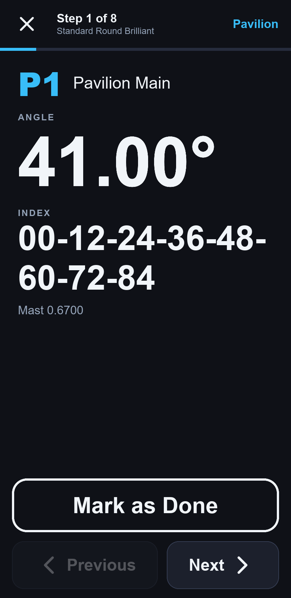
3What only the desktop does
The mobile app is a smaller program than the desktop studio. These are the differences as of today; each one was checked against the mobile crates.
| Feature | Mobile app | Desktop app |
|---|---|---|
| Remote library | Partly. The Library page switches between This Phone and a paired coordinator's library: searches run on the computer, and Sync copies its design files to the phone. Remote rendering sends a scene to your endpoint; the computer's catalogue is not edited from the phone. | Browse a coordinator's catalogue and hand sample tracing to it (distributed page). |
| GPU rendering | Partly. The device GPU traces Path-Traced pictures of up to 262,144 pixels (512 × 512), or Ray-Traced pictures of up to 1,048,576 pixels; larger pictures and some stones use the processor, on up to six worker threads (two in battery saver). If the driver cannot build the Path-Traced kernel for one kind of stone, that kind uses the processor for the rest of the session. | The GPU compute path, when the machine has a suitable adapter. |
| Angle sweep | No. The tilt curves are there. | Edit → Angle Sweep: a table, a chart and CSV for one tier's angle (studio page). |
| Rough planner | No. | Plan stones from a block, pebble or scanned rough (studio page). |
| History pictures, snapshots and the Compare window | No. Session History lists the steps with a short text comparison and Saved Variants keeps named copies, but there is no picture of each step, no snapshot and no Compare window. | A History tab with a picture of every step, named variants and a compare window (studio page). |
| Tutorials, manual and help | No. More → Help is a placeholder page for a later version. | 96 short tutorials, Build This Design, the manual built into the program, and a command palette. Video tutorials are on the Pleochroma YouTube channel. |
| Tilt video, a local render-job queue and large stills | No tilt video and no local queue. One still at a time, as a PNG, up to the limits in the app's settings; a still can be sent to your own server as a job (see Remote rendering above). The tilt curves themselves are there. | Tilt video export, a queue of render jobs, and stills up to 8192 × 8192 pixels. |
| Command-line tool | No. It is a separate program. | pleochroma-cli (getting started). |
| Screen reader | No. The toolkit exposes no accessibility tree on Android yet (no TalkBack). | Keyboard reach and screen-reader names for the controls (studio page). |
4On a tablet
On a wide screen the same pages use the room. The bottom bar becomes a rail at the left, the Library shows more cards, and the Design page puts the picture beside the Design panel with its chips, tabs and tier list. The Diagram view shows the three diagrams side by side. The Cut page puts the instructions beside the progress card and the faceting diagram.
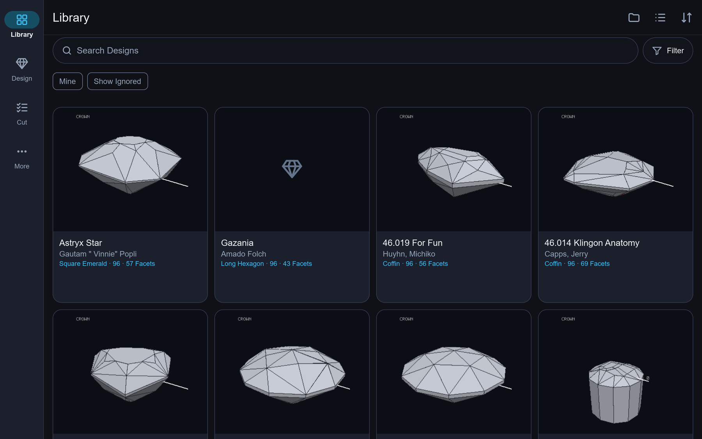
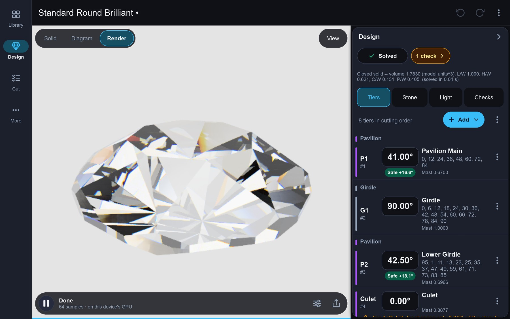
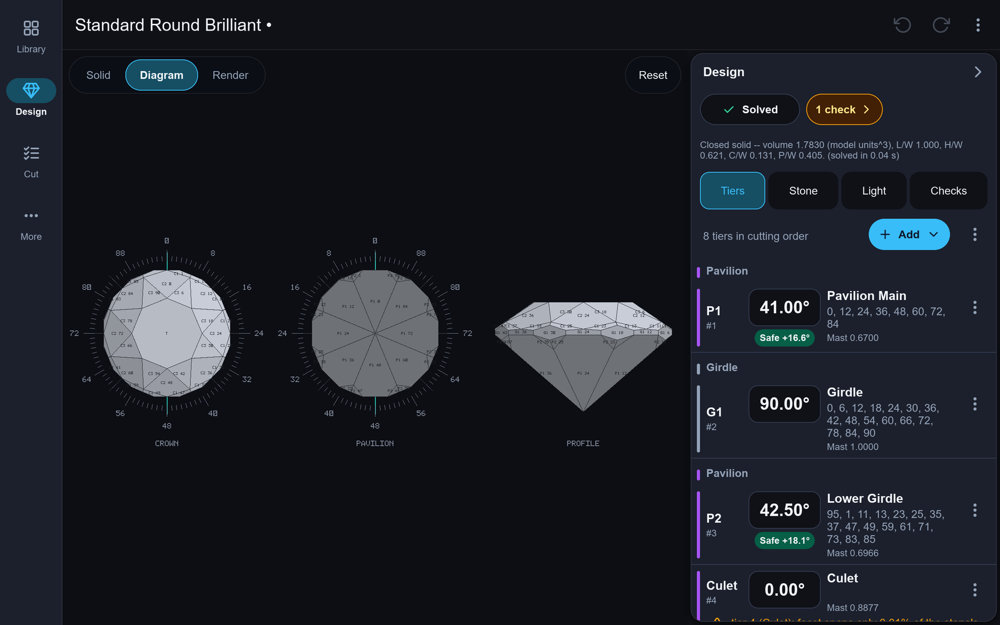
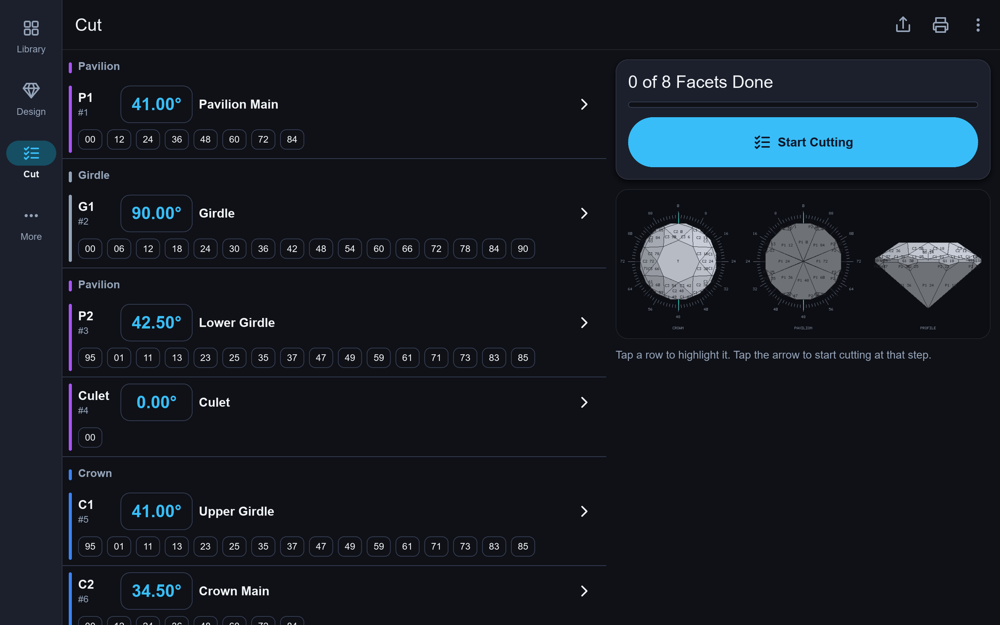
5Try it
From Google Play
Install Pleochroma from Google Play on a phone or tablet with Android 9 or newer on 64-bit ARM. Updates arrive through the store.
On the desktop, in a window
The quickest way is to run the same interface in a desktop window at a phone or tablet size, from a checkout of the source (you need a Rust toolchain). File pickers come from the desktop. It exercises the interface and the shared core, not the Android services such as sharing and printing.
cargo run -p pleochroma-mobile-android --features desktop-preview --bin pleochroma-mobile-preview -- --size phone
--size takes phone (390 × 800, the default),
phone-land, tablet, tablet-land or
your own WIDTHxHEIGHT, such as 412x915.
Built from source, on your own Android device
To run your own build, make a debug APK from the source and install it
on your phone or tablet. The app targets Android 9 or newer
(minSdk 28, targetSdk 36) on 64-bit ARM (arm64-v8a), and its
application id is com.indicatrixsuite.mobile. Condensed from
the README.md in apps/pleochroma-mobile-android, which has the full
steps:
- Install Android Studio and, from its SDK Manager, Android SDK Platform 37, the current Build-Tools and NDK r30. Gradle asks for a JetBrains JDK 21 and downloads it when none is installed; the JDK bundled with Android Studio also fits.
- Add the Rust target and the build helper:
terminal
rustup target add aarch64-linux-android cargo install cargo-ndk --version 4.1.2 --locked - Set
ANDROID_HOME,ANDROID_NDK_HOMEandJAVA_HOME(a JDK 17 or newer; the README also namesANDROID_JAR, which cargo commands you run yourself need), then restart Android Studio and your shells. - Open
apps/pleochroma-mobile-android/androidin Android Studio once and let it sync: that creates the Gradle wrapper. - Pick a device with USB debugging on and press Run. Android Studio builds the Rust library for you before every build. Or build from a terminal in that folder and install with
adb:terminal — from apps/pleochroma-mobile-android/androidgradlew assembleDebug adb install -r app\build\outputs\apk\debug\app-debug.apk
The first Rust build is slow, tens of minutes, because the drawing library
(Skia) is compiled from source, and it needs clang, Python
and ninja on your PATH. Later builds are
incremental. For an emulator, add the x86_64-linux-android
target and -PrustAbis=arm64-v8a,x86_64 to the Gradle command.
6Connect your phone to a computer
A phone can render on your computer and browse the computer's design library. The computer runs the Pleochroma Coordinator and the phone runs the Android app. You pair them once with a QR code; after that the phone finds the computer again by itself.
You need:
- The Pleochroma Coordinator on a computer. The first time it starts, a setup wizard asks six short questions.
- The Pleochroma Android app on the phone.
- Both devices on the same Wi-Fi network.
The pictures below use one example setup: a Windows computer named Studio PC at 192.168.1.20 and a phone named Pixel 8. Your names and addresses will differ. On Windows, the system may ask to allow Pleochroma on the network while you set up the coordinator. Choose Allow for private networks, or phones cannot reach the coordinator.
On the computer: the setup wizard
The wizard opens the first time the coordinator starts. Every answer can be changed later in Settings.
- Start. Keep Run a coordinator on this computer selected (marked Recommended) and click Next.
- Name. Type a name for the coordinator. Phones show this name before they connect, so pick one you will recognize. Here it is Studio PC. Click Next.
- Library. With Choose a library file selected, click Choose… and pick your
facet_diagrams.sqlitefile. Phones browse designs from this one file. If you only want to render, choose Rendering only (no library). Click Next. - Network. Keep Devices on my network (Recommended). It shows the address phones will use, here 192.168.1.20. Only this computer would keep phones out. If Windows asks about the network, allow private networks. Click Next.
- Rendering. Keep Graphics card and processor (Recommended) unless you want to leave the processor free (Graphics card only) or have no suitable graphics card (Processor only). Click Next.
- Done. The last page summarizes your choices and offers two switches, Start with Windows (in the tray) and Keep this computer awake while devices are connected or jobs run. Click Start the coordinator.

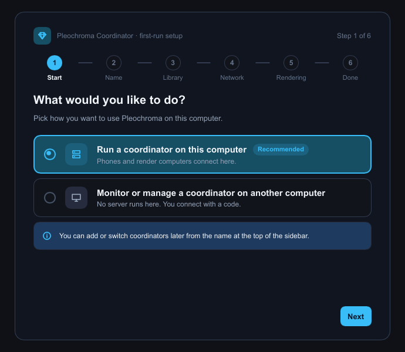

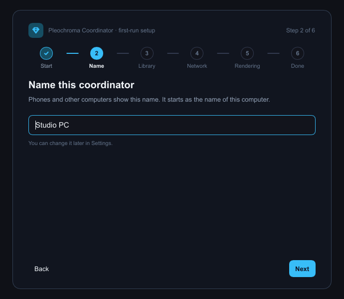

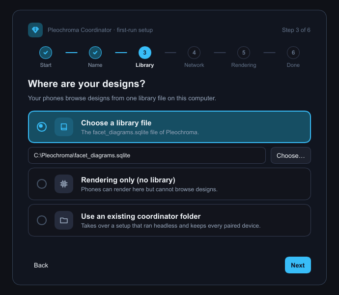

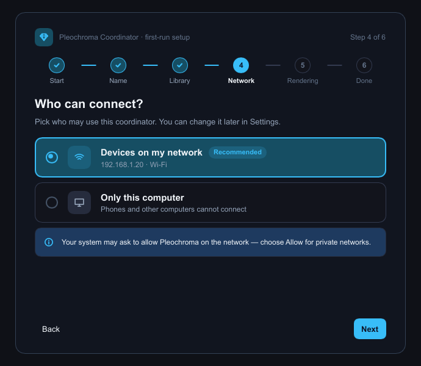

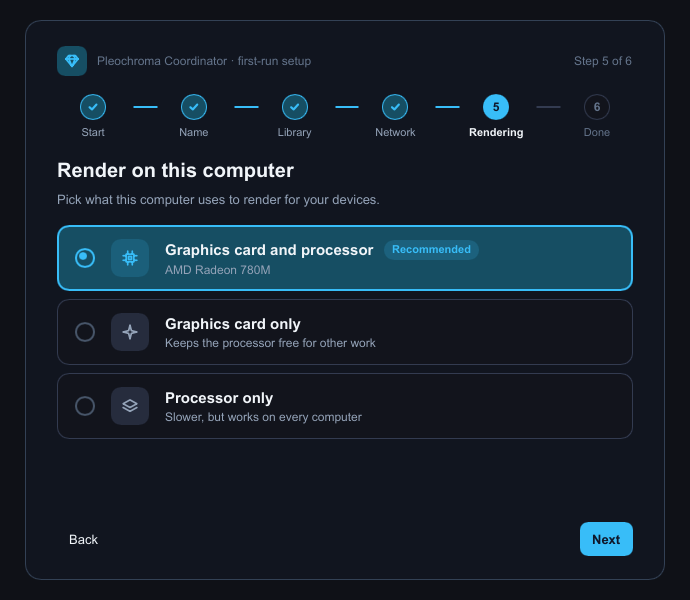

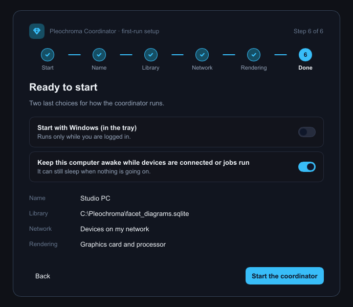
On the computer: show the code
- After the wizard the Overview page opens. It says the coordinator is running and shows the address phones use. Connect a phone is in the top bar and again on the page, next to Connect a computer. Click it.
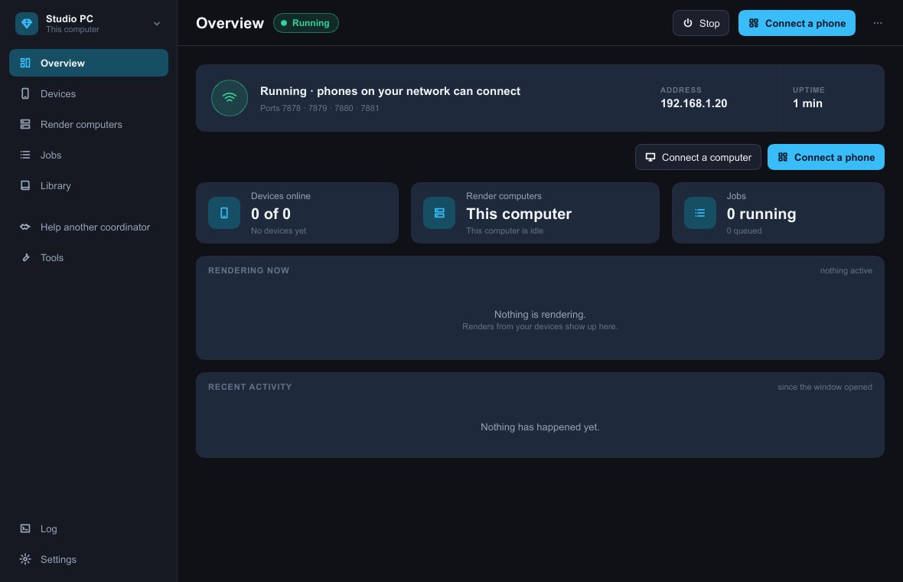
- The Connect a phone window shows a QR code at once, on the Phone tab, with the steps for the phone and the address inside the code. The code is valid for 3 minutes and works once. A new one replaces it when it runs out. Leave this window open while you use the phone; closing it cancels the code.
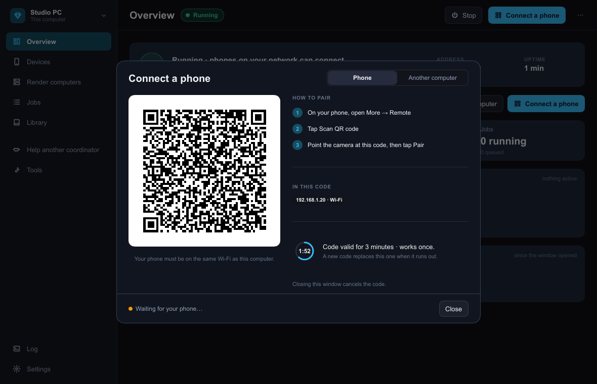
On the phone: scan the code
- Open the Pleochroma app, tap More in the bottom bar, then tap Remote under APP.
- On the Remote page, the card PAIR WITH A COMPUTER has the button Scan QR code. Tap it. Android asks for permission to use the camera the first time. Point the camera at the code on the computer.

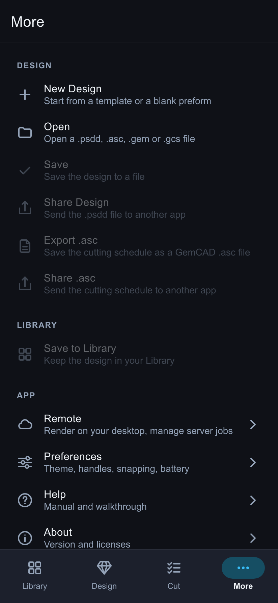

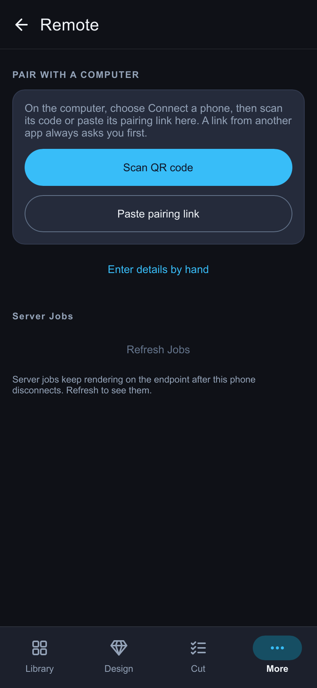
- The app does not connect yet. A sheet asks Pair with Studio PC? and shows the address, 192.168.1.20:7878. Check that the name is your computer, then tap Pair. Cancel stops without connecting. If the phone was paired with another computer before, the sheet says so and the button reads Replace and pair.
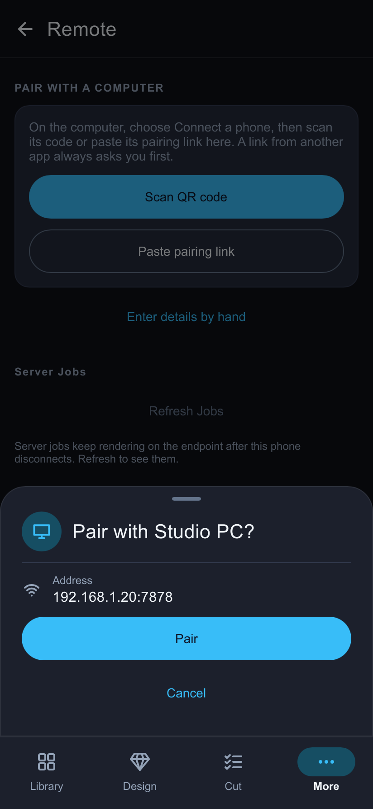
On the computer: the phone is paired
- The Connect a phone window turns to a green check and says Paired from followed by the phone's address. Under Name this device, type a name for the phone, here Pixel 8, and press Enter. Click Done. If you do not recognize the address, click Not my device — remove access.
- Open Devices in the sidebar. The phone is listed there as online.
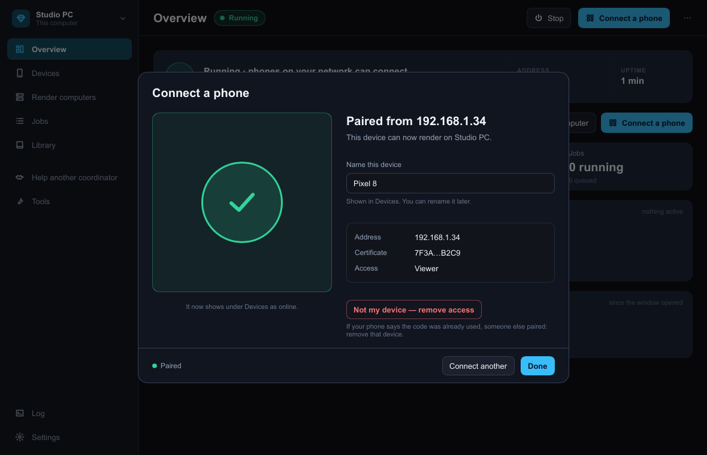
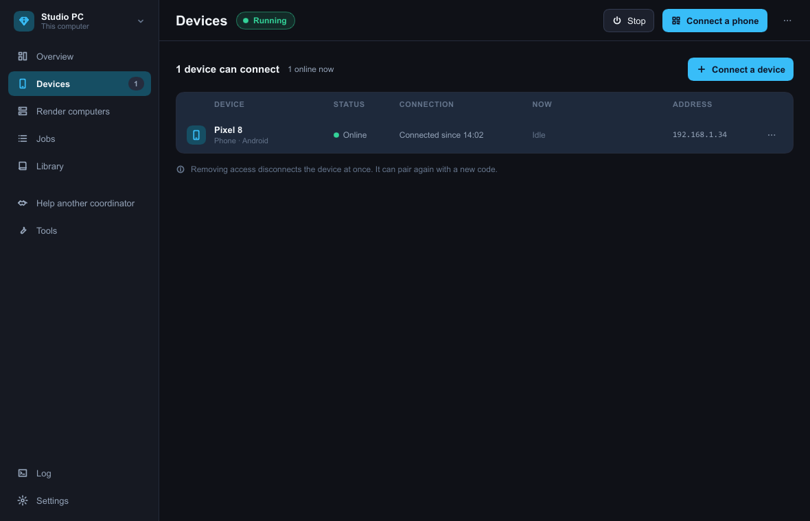
On the phone: choose what to use the computer for
- The app asks Render on Studio PC? Tap Use Studio PC to have the computer render the pictures for this phone, or Keep on this phone to render on the phone as before. You can change this later in the render settings.
- If the computer has a design library, the app then asks Copy designs from Studio PC? Copy Designs copies the library to the phone so you can search and open designs without a connection. The first copy can take a few minutes and uses storage on the phone. Not Now skips it; you can copy later with the Sync button on the Library page.
- On the Library page, the switch at the top now reads This Phone and Studio PC. Tap Studio PC to browse the designs on the computer. The button beside the switch syncs the computer's designs to the phone.

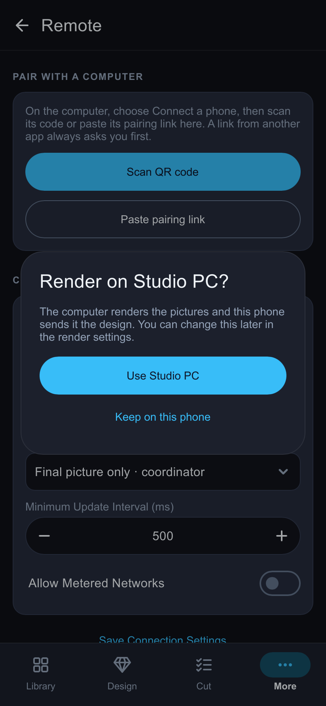

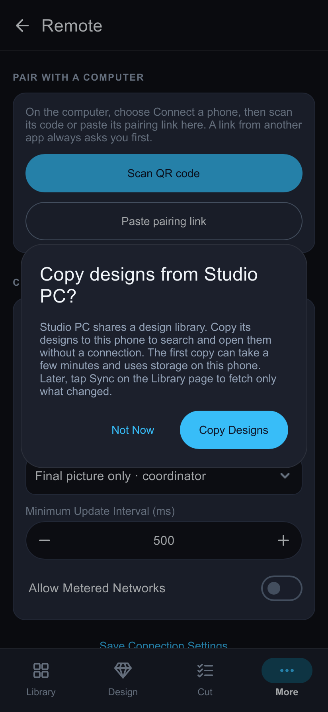
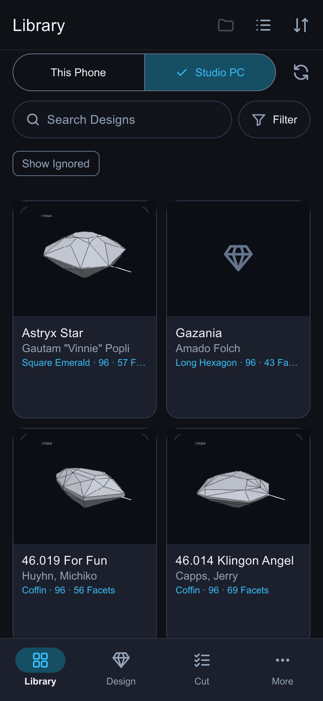
The phone and computer stay paired. To remove a phone later, open Devices on the computer and remove its access. To pair another phone, click Connect a phone again, or Connect another in the window that confirms a pairing.
7Known limitations
- Not validated on devices. History and variants, concave editing, Deep Solve, Optimize, Retarget, device GPU rendering and remote rendering are in the source, written and read, but not yet run on a range of devices. The GPU kernels for concave tools have not been tried on Adreno and Mali chips, and remote rendering has not been tried against a real worker over Wi-Fi or mobile data. Optimize and Retarget are included by the default
validated-design-searchfeature; their device validation remains pending. - Rendering time. A few hundred samples per pixel take a while on a phone, and the render lowers its work when the device runs hot or the battery saver is on. A live remote render restarts from sample zero after an interruption, and does not survive the app process being killed; a server job does.
- No TalkBack. The interface toolkit exposes no accessibility tree on Android.
- External mouse wheel. The toolkit's Android adapter does not handle scroll events. The app ignores them, so a mouse wheel or trackpad scroll does nothing; scrolling by touch works.
- Back navigation. Back steps out of whatever is open, then goes to the Library; on the Library, a second Back within two seconds exits (“Press Back again to exit”). Android 13 (API 33) and newer use the app's own Back handling, with predictive back from Android 14 (API 34); Android 9 to 12 use the Back key route. It is not yet validated across Android versions, devices and navigation modes.
- Keyboard. The toolkit drives the soft keyboard through its own helper, and numbers are typed on the app's own keypad, not the system numeric keyboard.
- Printing. The cutting sheet is printed from an off-screen web view; check the system print preview that it came out right.
- Files from other apps. Reading is limited to 64 MiB per file, 256 MiB per request and 2,000 design files per picked folder.
8Get the desktop app
For the Rough planner, the tutorials and manual, tilt video, the full coordinator library, the Compare window and the command-line tool, use the desktop application. On Windows the easiest way to install it is the Microsoft Store, which keeps it updated. It is also a ready-built download for Windows, macOS and Linux (see the downloads section), described on the studio and CAD page. Video tutorials are on the Pleochroma YouTube channel. The browser version needs nothing installed (web app page). All three open the same design files.
Ray-Traced and Path-Traced
The Render page selects Path-Traced or Ray-Traced. A fresh install starts on Ray-Traced, which finishes in a moment; Path-Traced is one choice away in the Render settings. Draft, Normal and Fine use 1, 4 and 8 Ray-Traced AA taps; export uses 16. Ray-Traced device GPU pictures allow up to 1,048,576 pixels, versus 262,144 for Path-Traced, with CPU fallback for device limits. Remote mode carries the selected engine using protocol 45. The mobile app has no Stone Shadow or Tray Reflection setting, so its remote renders go without them.
Ray-Traced is a deterministic approximation: one d-line index, or three fixed indices with Fire, a spectral absorption tint in 10 nm bands and 1/4/8/16 AA taps. It finishes at the tap count without denoising. It omits polarization, birefringent doubling, scattering, zoning and edge rounding. Path-Traced retains the spectral model. Optical metrics, tilt sweeps and diagnostics keep their separate analytic tracer.